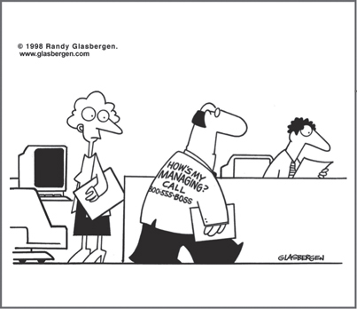

CHAPTER 9
Getting Work Done: Motivating, Delegating, and Managing in All Directions

CHAPTER HIGHLIGHTS
 The mental compatibility between employees and their work provides an important link to understanding motivation issues.
The mental compatibility between employees and their work provides an important link to understanding motivation issues.
 The quality of the manager/direct report relationship greatly influences the effectiveness of their communication, and therefore the delegation process as well.
The quality of the manager/direct report relationship greatly influences the effectiveness of their communication, and therefore the delegation process as well.
 The degree of alignment between the manager and the employee is a determining factor in the level of delegation success.
The degree of alignment between the manager and the employee is a determining factor in the level of delegation success.
 These factors have implications in terms of what you can expect from your direct reports as well as how you can use these insights to “manage up” effectively.
These factors have implications in terms of what you can expect from your direct reports as well as how you can use these insights to “manage up” effectively.
A Supervisory Case: Solving a Performance Problem
Mary Frankel is an employee benefits manager in the HR department of a Fortune 500 company. She has a dozen benefits specialists reporting directly to her, and she feels that eight of them are responding very well to her supervision. They appear to understand the work, and she can trust them to perform their duties as assigned. Their performance reviews all range from satisfactory to excellent.
But Mary has severe problems with the four other benefits specialists, and she is frustrated because she cannot seem to get them to perform to the standards she has set. After a number of attempts to solve these performance problems, which primarily concern accuracy, timeliness, and completeness of reports, she decides to administer the HBDI assessment to the whole group to see if the resulting profiles will give her a clue as to what the performance problems are.
From the HBDI Profiles, shown in Figure 9-1, Mary learned that the eight high performers are very homogeneous in their thinking styles, with a strong B-quadrant tilt. Of the remaining four, two are strongly C-quadrant, one is double-dominant C/D, and the fourth is strongly D-quadrant. Mary’s preferences are strongly tilted toward the B quadrant.
FIGURE 9-1 HBDI pro-forma profiles of good and poor performers on the team.
The job description of a benefits specialist is as follows:
• Administer the company’s benefits program in strict accordance with Benefits Bulletin 101-A.
• Keep detailed records of all transactions with employees, including correspondence, verbal discussions, and benefits claims.
• Enter all activity into the computer database on a daily basis so that it is available for verification at all times.
• Provide summary reports quarterly and annually.
• Performance will be evaluated on the basis of the company’s Zero Defects Program.
Mary looks at the four profiles that are radically different from those of the homogeneous group of eight and says to herself, “Oh, now I get it. I’ve got four people whose preferences are significantly different from the preferences of those who are performing well, and therefore they seem to be badly out of alignment with the job specs.” This confirms her hunch that if these profiles are so different from those of the people who are doing the job the way it should be performed, there must be a good commonsense explanation.
Mary does a quick review of the key descriptors and work elements data of the group of eight and the group of four and comes to the conclusion that none of the four low-performing employees exhibits the common preferences of the eight who are performing well. These include strong preferences for highly detailed, organized, procedural, administrative work activities. As a matter of fact, the profiles show that two of the four have such low preferences for these types of work activities that perhaps they even avoid them altogether and may not have the requisite skills. Further review shows that three of the four have strong preferences for the interpersonal aspects of the job, and their personnel files indicate complimentary feedback from employees who had made visits to the Benefits Office. It is clear that these three specialists take a personal interest in the employees’ transactions.
The profile of the fourth benefit specialist is diametrically opposed to that of the eight who are doing their jobs well. This specialist seems more interested in changing the rules than in complying with them. She likes to invent solutions to employee problems. She often overlooks missing pieces of needed information and writes little notes indicating that through verbal discussion, she is satisfied with the employee’s submission on the various benefit forms. It becomes clearer and clearer to Mary that this person is really marching to a different drummer and is not properly assigned based on the work requirements for this job. Although she can perform, it requires great effort—and is this really the best use of her skills and talents?
A Matter of Preference or Competence?
As we discussed in Chapter 3, although preferences are commonly correlated with competences because people tend to do best what they like best, preferences and competences are not the same thing. Just because the four team members aren’t performing well doesn’t necessarily mean that they don’t have competency for the job or can’t be successful in it. What it does mean is that there is a lack of alignment between the responsibilities and requirements of the job and how the person prefers to think and approach work. For this reason, it’s not surprising that their performance is lagging and Mary is struggling to resolve the situation. These employees are swimming against the tide of their natural preferences.
Mary decides to take a deeper look in the hopes that she can uncover the nature and extent of any job alignment problems. She gives each person with performance problems a chance to write a description of the job as he or she understands it and then to write a description of the job as he or she would like to perform it.
Part of a manager’s job, whether you’re managing people, projects, or specific kinds of work, is being able to get things done through others. Understanding “where they’re coming from” in terms of their thinking preferences can be tremendously valuable because it gives you clues about what type of work they do best, how to structure tasks and assignments for optimum productivity, and even where someone else’s strengths might fill in the gaps in your own thinking. But all too often, in most settings, we managers ignore the mental aspects of work, and as a result, we pay the price in both lost productivity and painful consequences.
Mary’s case is a fairly common one. Managers tend to hire and choose to work with people who reflect their own mental preferences, partly because they “get” each other quickly, and partly because of the nature of the work itself. But what about the outliers? It’s up to managers to learn how to encourage and cooperate with their employees’ and others’ efforts to adjust their job assignments and processes in a way that is consistent with getting the job done most efficiently and effectively for all concerned.
In this situation, Mary had an opportunity to explore ways in which she could use the preferences and skills of those team members who did not fit the group norm, finding tasks that required interpersonal skills and idea generation to improve department issues. In addition, once they understood the needed baseline, the outliers were able to beef up their skills somewhat and improve their performance with some targeted training. They were motivated by the focus on their new roles, but they still needed the attention to detail and administrative skills to perform effectively.
The Manager’s Role in Employee Motivation
Motivation of employees is a key issue at all levels of supervision, management, and leadership. Throughout my travels working with and talking to people who are in charge of other people, I continue to find them making a fundamental mistake. They continue to believe and behave as if they are responsible for an employee’s motivation. Although the relationship between the manager and employee does affect job satisfaction, countless books, articles, and programs have provided evidence to generations of leaders that the motivation of workers does not come from the manager—it comes from within each individual employee. Why is this so hard to grasp? A possible answer is that we have established a cadre of leaders who think that visible action on their part is the primary way to lead—that you must do something or you will not be viewed as a leader by those who are led—and that motivating others also falls into this category.
The fact is, we all motivate ourselves. But managers can encourage self-motivation in a number of ways:
1. Provide employees with work that they find stimulating.
2. Provide a work climate that allows this stimulating work to be performed in ways that satisfy and fulfill the employee.
3. Provide incentives and rewards that supplement the self-actualization that the employee is already experiencing.
4. Provide the necessary tools, training, materials, and support to allow the employee to optimize quality performance, including in areas of lesser preference.
5. Stay the hell out of the way!
This surprisingly direct and simple process is founded on two human resources basics that are essential to effective management:
1. Know the employees. Understand their preferences, their skills, their expectations, and their job needs.
2. Understand the mental requirements of the work that is being done. This requires an investment of time, energy, and skill to diagnose the work elements of the tasks to be performed and then create a profile of the mental preferences required for that job.
The next step in this process is exceedingly elementary in concept, but impossible to carry out if the preceding steps have not been rigorously performed: bringing the employee into alignment with the work. Alignment is a critical issue that I explore in depth in Chapter 10. For specific tips on designing jobs with thinking preferences in mind, see the section “How to Turn Misalignment Around.”
Delegating in all Directions
I do not believe that the effectiveness of the delegation process is dependent on the manager’s having the authority to reprimand or fire a nonresponsive direct report. Any manager worthy of the name should be able to delegate successfully on the basis of the shared understanding of the task and its priorities and of the shared goals of the organization.
Consider for a moment a team leader who has no organizational power other than the team leader role, but who needs members of the team to accept delegation of work tasks. Here we are not dealing with the tools of traditional authority-based management, but rather with the sophistication of getting work done when you are not really in charge. Geoff Bellman’s book Getting Things Done When You Are Not in Charge2 is an outstanding source of wisdom in this domain.
In this book, I have tried to provide as many examples as I can to illustrate the consequences of aligned, misaligned, and nonaligned business relationships. Even under the best of circumstances, with two individuals who are clearly on the same mental wavelength, there is a need for testing understanding and clarifying any discovered misunderstanding, because there is always the possibility of a competitive outcome from two people who are strongly aligned in the same quadrant. Even under the best of circumstances, the person in charge—whether a manager or a team leader—will be at risk unless they ensure the person to whom he or she is delegating to really understands:
1. The “why” behind the task to be performed
2. The goal of the task
3. The specifics of the task to be performed
4. Who needs to be involved
5. The priority determined by the situation and the person in charge
6. The precise due date when action is required
The many references in this book to the consequences of mental preference all lead to the high probability that clear communication and alignment between a manager and an employee will result in effective understanding concerning the delegated task to be performed. In contrast, the various degrees of misalignment or nonalignment and subsequent unclear communication create a low probability that effective understanding and performance will take place. It stands to reason that if the employee does not completely understand the delegated context, goal, and task; does not accurately assess the priority; does not understand who is involved; does not capture the delivery date; and does not comprehend the consequences of failure, there is a high probability of disaster.
Complicating the delegating process are the typical dynamics of a manager/leader-direct report relationship. The manager feels that the work that needs to be done is simple and straightforward, and the employee doesn’t want to appear stupid, so the delegation communication from the manager is often inadequate and the feedback from the employee is frequently misleading. The inadequacy of the communication is compounded by the likelihood that both verbal and nonverbal aspects of the manager’s communication are, to some extent, misunderstood or misinterpreted by reason of the two people’s mental differences.
The Whole Brain Delegation Walk-Around in Figure 9-2 is a tool you can use to substantially increase the probability of successful delegation. It offers a method of testing for understanding and clarifying misunderstanding that can be easily adapted for use by either the manager or the employee, since the objective is mutual understanding.
FIGURE 9-2 The Delegation Walk-Around Model. Put your delegation method to the test by asking these questions of yourself before taking action.
One way to use it is to diagnose each of the manager-direct report delegation outcomes in the model on a scale of 1 to 10, with 10 being the most successful, to determine the degree of delegation success.
Delegation is often taught “by the numbers” and encouraged as a characteristic of good management. That is, you do it in a certain series of known steps, and you get it off your personal agenda because, after all, managers are supposed to get work done through others, not do it themselves. Here’s how Whole Brain Thinking brings a different level of sophistication and comprehension to the delegating process because it offers:
1. An early warning system through the diagnostic tools
2. Techniques and communication tools to improve the written and verbal aspects of the process
3. An effective method of testing for understanding and a road map (the Whole Brain Delegation Walk-Around tool) for achieving the understanding needed for effective delegation to take place
Managing Up
What do we expect our direct reports to do: take the initiative, toe the line, follow orders, or interpret our leadership situationally? As a direct report yourself, how would you define your role?
When I was asked that question many years ago, I surprised myself somewhat by answering this way: “One of my key objectives in this position is to generate enough cash flow to earn my salary as early in the year as I can. If I can pay for myself by June, that means that everything after June represents added value to the organization. If I can pay for myself by April, that’s even better, and if I can pay for myself as early as March, I will beat my stretch goal for the yearly performance of my entire component.” Over the years, I have found this personal goal to be much more motivational to me than achieving the budgeted performance that I negotiated with my boss. I was going to do that anyway, but by paying for myself or my whole operation as early in the year as possible, I rewarded myself for my performance. It was actually a higher standard than the one that my leader expected, so as a direct report, I set my own standards of performance at a higher level than my boss’s expectations. I think that many, many employees set higher standards for themselves than their leaders set for them. In your relationship with your own manager, this can provide a foundation for “managing up” effectively—for making yourself heard, respected, and valued. And of course, understanding your manager’s preferences will help you communicate and position your objectives in such a way that you will get the greatest buy-in. See Chapters 8 and 13 for additional communication and influence tactics.
Another approach is to work with your manager to turn as much of your job as possible into the kind of work that you really love. In the early stages of your career, you might be more inclined to discover what is out there and take on an array of assignments and learning experiences. Once you know the kind of work that stimulates you the most, however, you need to take the initiative to identify the elements of those work activities that are available in your occupation and can be made a part of your job assignment. The greater the percentage of this kind of work there is in your job, the more interest and passion you will have for doing the work, and therefore the better your performance will be.
In those situations in which you are the manager, establish a climate that will encourage your direct reports to take the initiative to identify the work that they really love. This is the work they find most satisfying—not necessarily the easiest or that they are fully skilled for yet. As with the first approach, I believe that this is a win-win-win solution to improving productivity, engagement, and work satisfaction. It is a win for you, it is a win for your employees, and it is a win for your organization.
Numerous studies reinforce the point that satisfied employees are more productive and engaged, and that their companies benefit as a result. It would be a serious mistake to write this off as “touchy-feely” stuff. For me, this is plain common sense. Supervising, managing, and leading in the ways that I have suggested will unleash the latent productivity of workers, which is beneficial to the organization and to its objectives and goals.
In summary, followers need good leaders, and good leaders need good followers. The organization in which they work needs a climate that encourages both leaders and individual employees to flourish. There is not much in the domain of management that can be better than this combination.
SO WHAT?
 Motivation comes from within, and it is essential to match employees with work that stimulates them.
Motivation comes from within, and it is essential to match employees with work that stimulates them.
 By applying Whole Brain Thinking to better understand job fit and manager-employee conversations about alignment, managers can set the stage for improved motivation, and employees can take steps to unleash their own inner motivation.
By applying Whole Brain Thinking to better understand job fit and manager-employee conversations about alignment, managers can set the stage for improved motivation, and employees can take steps to unleash their own inner motivation.
 The Whole Brain approach offers useful diagnostic tools to managers and team leaders to help them improve their delegation effectiveness.
The Whole Brain approach offers useful diagnostic tools to managers and team leaders to help them improve their delegation effectiveness.
 You have the responsibility to “manage up” when it comes to your own motivation and engagement, and to encourage your direct reports to be accountable for theirs as well.
You have the responsibility to “manage up” when it comes to your own motivation and engagement, and to encourage your direct reports to be accountable for theirs as well.
 One way to manage up is to learn how to maximize the percentage of stimulating work in your job assignment and ask for what you need.
One way to manage up is to learn how to maximize the percentage of stimulating work in your job assignment and ask for what you need.